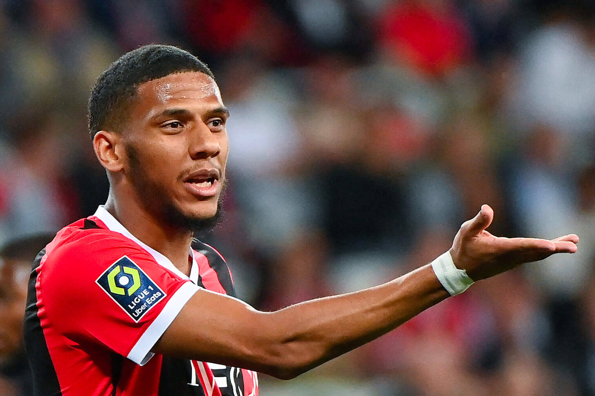

장클레어 토디보
뛰어난 피지컬과 대인 수비 능력을 갖춘 핵심 수비수로, 니스 수비 라인의 중심을 담당하며 안정감을 제공한다.
OGC 니스는 프랑스 남부 니스를 연고로 하는 리그 앙 구단으로, 조직적인 수비와 안정적인 경기 운영을 바탕으로 경쟁력을 유지하고 있다.
최근 니스는 수비 밸런스를 중심으로 역습을 활용하는 전술을 통해 강팀을 상대로도 쉽게 무너지지 않는 모습을 보여주고 있다.
뛰어난 피지컬과 대인 수비 능력을 갖춘 핵심 수비수로, 니스 수비 라인의 중심을 담당하며 안정감을 제공한다.
강한 피지컬과 박스 안 결정력을 갖춘 공격수로, 역습 상황에서 득점 옵션으로 활용도가 높다.